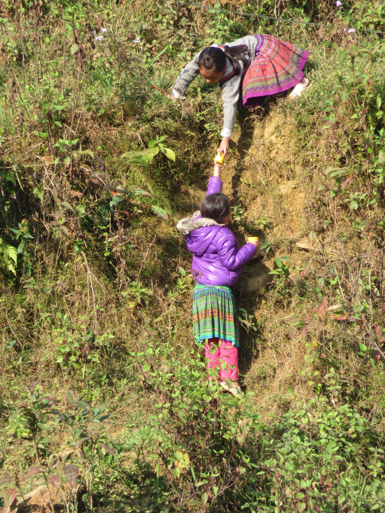
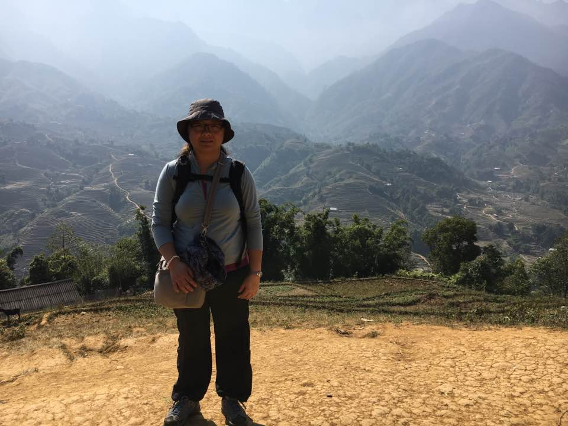
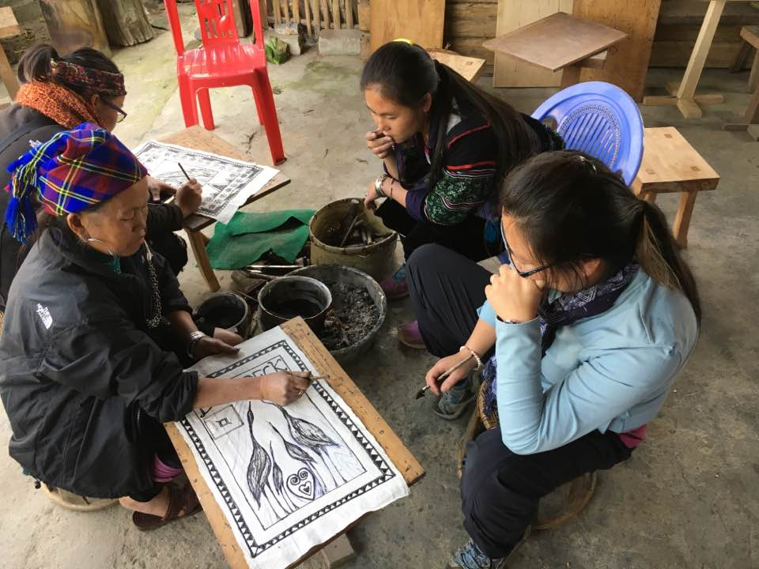
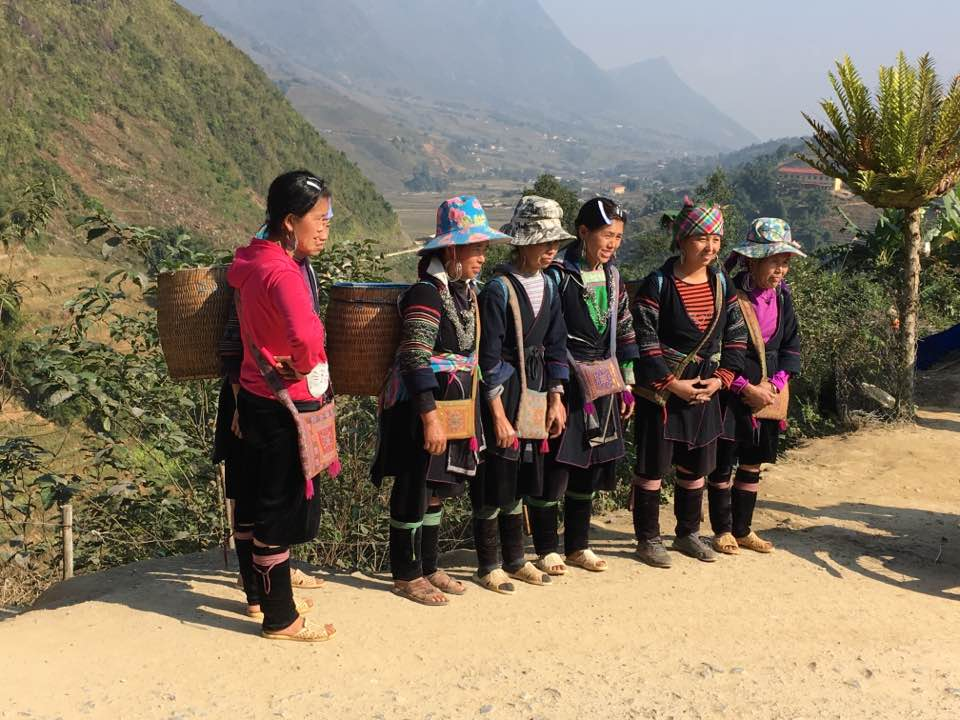
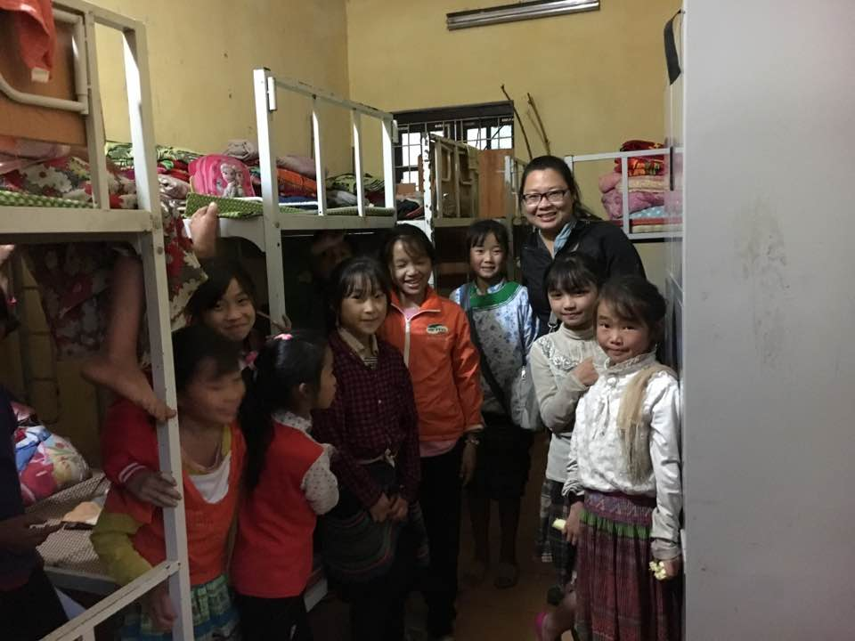

Courage Educational Leadership Foundation (CELF)
Empowering underserved students in Southeast Asia through educational scholarships.
- Type: Private Foundation/Non-Governmental Organization (N-GO)
- Focus: Marginalized ethnic groups in Southesay Asia
- Location: Wisconsin, U.S.A.
- Area serving: Sapa, Vietnam
- Method: Educational Scholarships
- Director/Founder: Mai Chao/magentaspirit@gmail.com
Mission
To invest in marginalized ethnic minority students in Southeast Asia by providing educational scholarships for higher education. Through education, students will have the courage to stand up to oppression, create social mobility and improve the quality of their lives. By supporting global education, marginalized students will have opportunities to become self sufficient so that one day, they may return to contribute as role models in their communities.
Rationale
In the 1980s, I was one of the few fortunate refugee children who received an informal education in Ban Vinai Refugee Camp, Thailand. My family lived there for over two decades before coming to the United States of America. Prior to living in the refugee camps, my father and thousands of Hmong men fought alongside the Americans during the Vietnam War. After the Americans left Southeast Asia in the early 1970s, soldiers like my father and their families were being persecuted in their own country. Tens and thousands of Hmong people made a dangerous exodus to Thailand where countless lives were lost. Our people were split into three groups like when our ancestors were once forced to divide in China. Some stayed in Laos, others went to Vietnam and many left for third countries such as the USA, Australia, Canada, France and Europe.
My first ten years of life was spent in Ban Vinai where those memories continue to resonate deep in my heart. Although, I only spent half a day in a makeshift school to learn reading, writing, and arithmetic taught by Thai and foreign volunteers, this experience sparked a lifelong love of learning for me.
My parents owned a small jewelry shop so they were able to pay for my meager education. I remember vividly the disappointed faces of children who did not have the same opportunities as us. When their hungry eyes met mine, I looked at the hard-packed earth with guilt. I promised one day, I would find a way to help children pursue opportunities to improve their lives through education, especially those who live in underserved and marginalized communities.
In December of 2016, I had the privilege of visiting Vietnam and Thailand to reconnect with my cultural roots and discover how I can contribute to this part of my community. After spending two weeks in each country interacting and witnessing the circumstances of marginalized ethnic minorities, I was inspired to do something. Children as young as my six year old son were out in the streets selling homemade wares to tourists. I saw the same disappointment and shame in the eyes of these young children who were unable to change their circumstances. One way to help improve their lives is to help keep them in school so they can one day support themselves and their families. They deserve a chance at life as any children should.
As a global citizen, I am calling upon your humanity to help me do more to improve the lives of these historically oppressed ethnic minorities in Southeast Asia. Money cannot solve all problems, but with our collective hearts and hands, we can change the next generation of people by building future leaders through education.
When you and I join hands, we are working toward lessening poverty, oppression, and hardship for bright students who have hopes and dreams. They are the courageous leaders who will change and shape their communities. We are investing in the future of these highly motivated young people by supporting educational opportunities.
Through your generous donation, CELF will collaborate with local organizations to provide financial scholarships for students to attend higher education. It is my sincere hope that you will join hands with me to transform the lives of these courageous students in Southeast Asia.
Long Range Goals
One of the goals of this foundation is committed to empowering marginalized students living in Southeast Asia. The Board of Directors (3 volunteers) and I believe in investing in future leaders so they can support themselves and return to lead their communities.
Once the financial start up goal of $10,000 is met, a private foundation will be established. Funds will be invested in order to build up dividends for scholarships. The first collaboration will be working with Shu Tan, who is the founder of Sapa O’Chau in Sapa, Vietnam. I start with Sapa O’Chau because Shu and I have a shared vision for empowering young people to pursue their hopes and dreams through education.
Many people who visit Sapa become inspired to give back. With the help of four Australian volunteers, Shu Tan, a young single mother from the Black Hmong tribe, was able to turn her dream of helping her people into a reality. Working together, they funded the first Hmong owned homestay in Sapa and established a socially conscious trekking service. Running on the social enterprise blueprint, Sapa O’Chau put the money earned back into the community through projects such as providing winter clothes for children and improvements to the village schools.
Later, Shu decided to tackle the problem of illiteracy among Sapa’s young tour guides and street vendors, many of whom never had the chance to go to school. With the help of a Norwegian anthropology student, she organized informal English night classes for a small group of enthusiastic youths in a room provided by a local hotel. As these Sapa O’Chau classes grew in popularity, so did the need for more facilities. In the summer of 2010, the Sapa O’Chau boarding facility opened. They have 40 students who would be eligible to apply to our private foundation to further their education. Through collaborative efforts with Shu, the Board of Directors, and I will establish an application process for students to apply. It will be a rigorous process in which students will need to fill out an application, and have an interview with the aforementioned personnel before a final decision is made. We will award funds to the candidates we feel best fit our vision and mission statements.
Shu’s success story is an example of global citizens joining hands for the betterment of other communities. We believe in the principles of joining hands by working together and giving back to communities whether directly at home or across the globe. Please find the courage in your heart to join hands with us in making this world a more fulfilling place for all people. Thank you for your generosity.
For more information . . .
Learn about Sapa O’Chau.